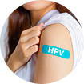
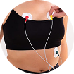
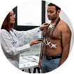

Detecção Precoce
Identifique problemas antes que se tornem graves.
Confira os principais exames de prevenção por faixa etária.
Os exames preventivos são fundamentais para detectar doenças em estágios iniciais, quando o tratamento é mais eficaz e menos invasivo. Manter uma rotina de check-ups regulares pode salvar vidas e garantir uma melhor qualidade de vida para você e sua família.
Identifique problemas antes que se tornem graves.

Proteja toda a família com exames regulares.
Viva mais e melhor com prevenção adequada.




Realize o autoexame das mamas todo mês, entre o 7º e 10º dia após o início da menstruação. Para mulheres na menopausa, escolha um dia fixo.
Homens e pessoas com testículos devem realizar o autoexame mensalmente, de preferência após o banho, para identificar alterações como nódulos ou inchaços.
Vacinas em Dia
Todos devem manter a carteira de vacinação atualizada. Algumas vacinas precisam de reforço na idade adulta, como tétano, difteria e hepatite B.
Cuidar da mente é tão importante quanto do corpo. Reserve momentos para relaxar, dormir bem e buscar apoio se sentir necessidade.